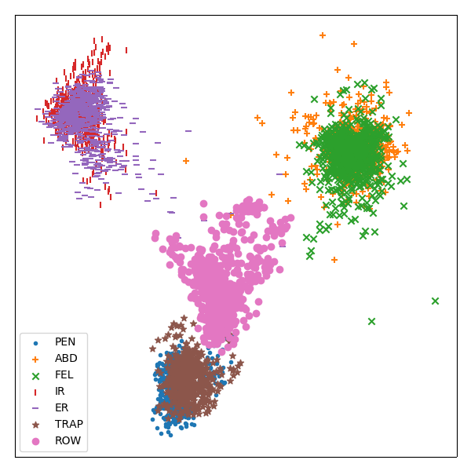

Note
Click here to download the full example code
Linear Discriminant Analysis¶
This example demonstrates how the pipeline can be used to perform transformation of time series data, such as linear discriminant analysis for visualization purposes
Out:
('X Shape: ', (4677, 100, 6))
# Author: David Burns
# License: BSD
import seglearn as sgl
from sklearn.pipeline import Pipeline
from sklearn.discriminant_analysis import LinearDiscriminantAnalysis
import numpy as np
import matplotlib.pyplot as plt
def plot_embedding(emb, y, y_labels):
# plot a 2D feature map embedding
x_min, x_max = np.min(emb, 0), np.max(emb, 0)
emb = (emb - x_min) / (x_max - x_min)
NC = len(y_labels)
markers = ['.','+','x','|','_','*','o']
fig = plt.figure()
fig.set_size_inches(6,6)
for c in range(NC):
i = y == c
plt.scatter(emb[i, 0], emb[i, 1], marker=markers[c], label = y_labels[c])
plt.xticks([]), plt.yticks([])
plt.legend()
plt.tight_layout()
# load the data
data = sgl.load_watch()
X = data['X']
y = data['y']
# create a pipeline for LDA transformation of the feature representation
est = Pipeline([ ('ftr', sgl.FeatureRep()),
('lda', LinearDiscriminantAnalysis(n_components=2))])
pipe = sgl.SegPipe(est)
X2, y2 = pipe.fit_transform(X, y)
plot_embedding(X2, y2.astype(int), data['y_labels'])
plt.show()
Total running time of the script: ( 0 minutes 1.977 seconds)